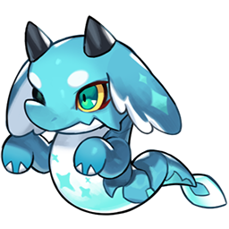
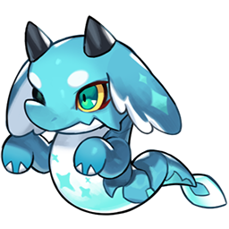
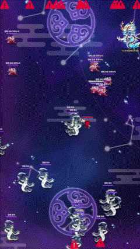
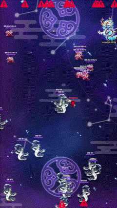

KYUNGHWAN SUL
Game Designer


I am a game designer with over three years of experience. I have a strong passion to deliver engaging and immersive gaming experiences to players. I am currently seeking a new opportunity where I can bring my creativity and skills to a dynamic team and contribute to the development of innovative games.
Game Designer at Puzzle Monsters from 2020 ~ 2024.


플레이어에게 매력적이고 몰입감 넘치는 게임 경험을 선사하고 싶은 게임 기획자입니다.
3년간의 경험과 기술로 열정이 넘치는 팀과 함께 혁신적인 게임 개발에 기여할 수 있는 새로운 기회를 찾고 있습니다.
'닌자 키우기 온라인'과 '닌자 서바이벌 온라인'의 개발 초창기부터 출시 후 라이브 서비스까지 기획자로 참여하였습니다.
'닌자 키우기 온라인' 2021년 출시한 방치형 RPG 장르의 모바일 게임으로, 뛰어난 성장감과 5개의 표창 덱으로 구성되는 독특한 시스템으로 많은 유저에게 사랑받았습니다. 이후 블록체인을 연동한 P2E 요소와 이어진 NFT 소환수 출시를 통해 한 단계 더 도약을 경험하기도 하였습니다.
3년이 넘는 글로벌 서비스 기간 동안 꾸준한 성과를 기반으로 방치형 RPG와 P2E 게임 장르에서 유의미한 입지를 가지고 있는 프로젝트입니다.
제작 배경
콘텐츠 설명

슈텐 도지
의도
이바라키 도지
의도


몬스터 텐트
의도
회고
이벤트 기간 : 2024.02.05 ~ 2024.03.03
이벤트 기조
목표
 



*청룡 소환수 등급 : [희귀] >> [영웅] >> [전설] >> [신] >> [초월]
청룡 소환수

 

이벤트 진행
*기존 소환수 성장 방식 : 소환수를 최대 레벨 {10}으로 성장, 소환수 뽑기를 통해 획득한 동일 소환수 2마리와 동일 등급 “소환수 영혼석” 아이템을 사용하여 등급 상승.
성과
기존 챕터
배경
문제점
개선 방향
몬스터 스폰 방식과 클리어 조건 변경
폭주 시스템
비기 시스템